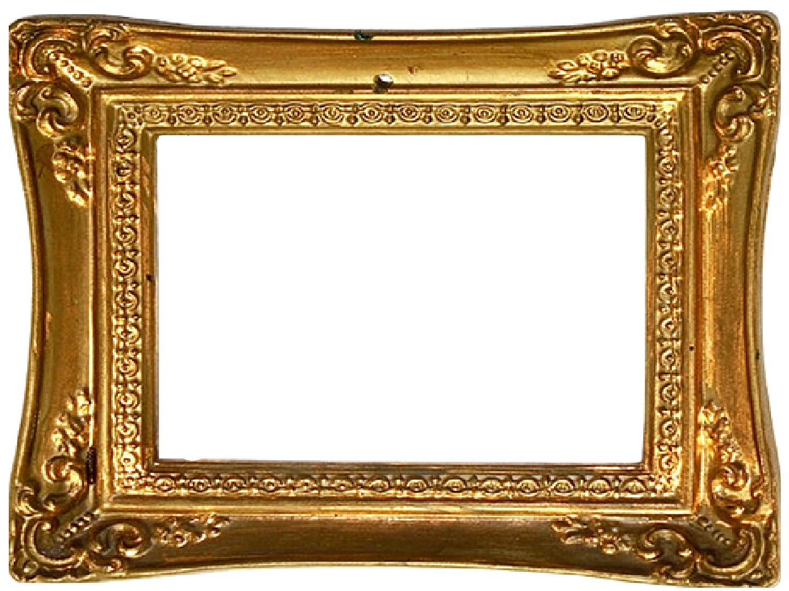

<!DOCTYPE html>

<!-- / todo: alternate between adding cool trippy effects and making art
/ ideas: fancy musem frames around games ( intricate and hand-made,not just photos), weird canvs sizes and ratios, float planes flying in, links to other gmaes embedded in games 
multiple tiny phaser canvases per page with cute little ai making the page magical and alive-->
<!-- idea: clouds that move vertically instead of horizontally or arrang eto form shape and move out and get smaller-->
<!-- clouds further away should move slower in 2d -->
<html>
<head>
    <script src="https://cdn.jsdelivr.net/npm/phaser@3.17.0/dist/phaser-arcade-physics.min.js"></script>
    <link rel="stylesheet" href="crosswalk.css">
</head>
<body>
    <!--  -->
    <div id="crosswalk"></div>
    <script>
    var config = {
        type: Phaser.AUTO,
        width: 160,
        height: 120,
        physics: {
            default: 'arcade',
            arcade: {
                gravity: { y: 200 }
            }
        },
        scene: {
            preload: preload,
            create: create,
            update: update
        },
        scale: {
            mode: Phaser.Scale.FIT,
        },
        parent: 'crosswalk',

        pixelArt: true,
    };

    var game = new Phaser.Game(config);
    var gameWidth = game.config.width;
    var gameHeight = game.config.height;

    var cloud0;

    function preload () {
        this.load.image('signal', 'signal.png');
        this.load.image('background', 'background.png');
        this.load.image('cloud0', 'cloud0.png');
        this.load.image('noParking', 'noParking.png');
        this.load.spritesheet('signalSheet', 'signal.png', {frameWidth: 16, frameHeight: 49})
    }

    function create ()
    {
        this.cameras.main.backgroundColor.setTo(100,150,229);
        cloud0 = this.add.sprite(40, 40, 'cloud0');
        var backgroundImage = this.add.sprite(gameWidth / 2, gameHeight / 2, 'background');
        backgroundImage.displayWidth = gameWidth;
        backgroundImage.scaleY = backgroundImage.scaleX;
        var signalSprite = this.add.sprite(83, 40, 'signalSheet');
        var noParkingSprite = this.add.sprite(127, 47, 'noParking');
        

        this.anims.create({
            key: 'signalChange',
            frames: this.anims.generateFrameNames('signalSheet', {start: 0, end: 1}),
            frameRate: .1,
            repeat: -1,
        })
        signalSprite.play('signalChange');
    }

    function update (time, delta) {
        cloud0.x += .001 * delta;
        if (cloud0.x > gameWidth) {
            cloud0.x = -50;
        }
    }
    </script>

<iframe class="music" width="300" height="24" src="https://www.youtube.com/embed/oId6WDE8MiI?&autoplay=1 " frameborder="0" allow="accelerometer; autoplay; encrypted-media; gyroscope; picture-in-picture" allowfullscreen></iframe>

</body>
</html>